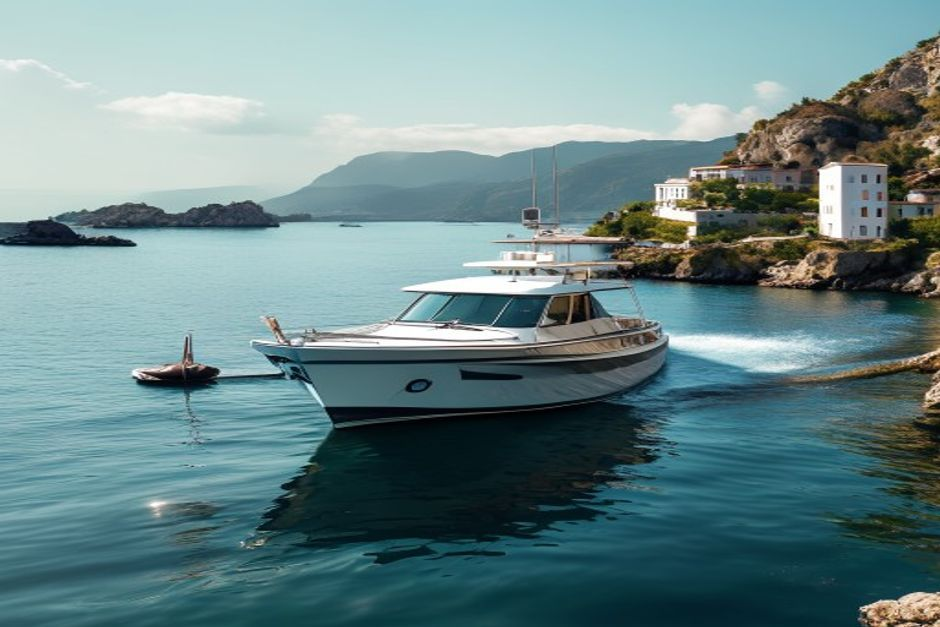
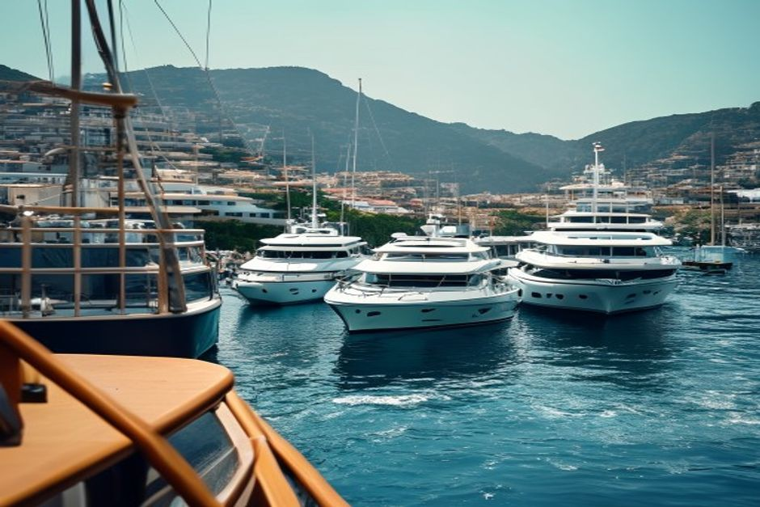

A private boat charter books the whole boat for your group alone; a shared tour sells individual seats on a scheduled departure alongside strangers. Here's what that actually changes once you're on the water in Madeira.
What's the actual difference between a private charter and a shared boat tour?
A private charter means one group — you and whoever you bring, up to the boat's capacity — has exclusive use of the boat for the duration of the trip. A shared tour means the operator sells individual tickets to a fixed departure, and you board with everyone else who bought a seat for that slot. Both leave from Funchal marina and both cover similar stretches of coastline, but who else is on the boat, and who decides the plan, are completely different.

How many people are on a shared boat tour in Madeira?
Shared catamarans and speedboats running out of Funchal typically carry groups ranging from a couple of dozen up to over a hundred passengers per departure, depending on the vessel. The schedule, route and stops are fixed in advance and apply to everyone on board — if half the boat wants longer at a cove and the other half wants to head back, the operator makes the call, not you.
Is a private boat charter worth paying more for?
It depends on group size. For a solo traveller, a seat on a shared tour is usually the cheaper way to get on the water. But for couples, families or a group of four to seven, splitting the cost of one private boat often lands close to what the same number of shared-tour tickets would cost — while including exclusive use of the boat, a route built around what your group actually wants to see, and no other passengers to share the deck with. That's where most people decide the difference is worth it.
What can you actually do differently on a private charter?
Because nobody else's plan competes with yours, the trip bends around your group instead of a schedule. That means choosing the start time — early morning calm water, or timed for sunset — picking the route between a coastal run, a snorkelling stop in a hidden cove, or a full-day mix of both, and staying somewhere longer if the light, the water or the wildlife is worth it. It also means bringing your own food and drink, playing your own music, and not explaining to a boat full of strangers why you want five extra minutes watching a pod of dolphins.
Is a private boat better for spotting dolphins and whales?
Generally, yes. A smaller private boat can cut its engine and idle quietly near a pod, holding position respectfully for as long as the sighting lasts. Larger shared vessels carrying dozens of passengers are noisier, less manoeuvrable, and run to a schedule that usually means moving on after a few minutes regardless of what's happening in the water. If wildlife is the main reason you're booking a boat trip, this is usually the deciding factor.
Which is right for you — couples, families or groups?
Couples celebrating an anniversary or proposal almost always prefer the privacy of a charter — no explaining to other passengers why you brought champagne. Families with young children benefit from a private boat's flexibility around nap times, seasickness and bathroom breaks, none of which pause a shared tour's schedule. Solo travellers and budget-conscious backpackers are often better served by a shared seat. And groups of five to seven — friends, multigenerational families, work trips — usually find that one private boat comfortably fits everyone for close to the price of splitting shared tickets, with the whole boat to themselves.

The boat doesn't change much between the two. Who else is standing on the deck does.
If your group is bigger than a couple and you'd rather set your own pace than follow someone else's schedule, a private charter with Chifbay from Funchal marina is built around exactly that — your route, your timing, your boat.